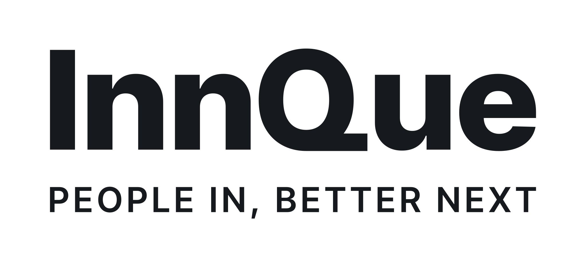

AX(AI 전환) 구축·운영

사람과 일을 먼저 읽고,
맞춰 세우고, 끝까지 운영합니다
InnQue는 처음 AI를 들이는 중소·중견기업을 직접 찾아갑니다. 그 회사의 사람과 일하는 방식을 먼저 읽고, 거기에 맞춘 AI 시스템을 현장에서 세우고, 끝까지 책임지고 운영합니다.
ABOUT
처음 AI를 들이는 회사 곁에서
InnQue는 처음 AI를 들이는 중소·중견기업에, 그 회사의 사람과 일하는 방식을 먼저 읽고 맞춘 AI 시스템을 현장에서 세우고, 끝까지 책임지고 운영합니다.
10~300명 규모 중소·중견기업의 대표, 기술이사, 운영총괄과 함께 일합니다. ‘이 회사에 맡겨도 되겠다’는 판단이 설 때까지 먼저 듣고, 할 일을 분명히 말씀드립니다.
일하는 태도
- 믿음직한과장하지 않고 단정하게 말합니다.
- 설계된우연에 맡기지 않고 계산해서 세웁니다.
- 곁에 있는현장에 직접 찾아갑니다.
- 오래가는유행보다 오래 쓸 수 있는 것을 고릅니다.
- 절제된꼭 필요한 것만 들입니다.
OUR NAME
InnQue라는 이름

이름에 세 가지 뜻을 담았습니다.
-
Inn
人 · 사람 인
출발점은 기술이 아니라 사람과 그 사람이 하는 일입니다.
-
Que
큐레이팅의 큐
많은 것 가운데 맞는 것을 고르고, 그 회사에 맞게 다듬습니다.
-
Que
Queue(차례)의 큐
일이 순서대로 흐르게 체계를 세우고, 멈추지 않게 운영합니다.
세 뜻을 하나로 모으면, 사람을 큐레이팅한다는 뜻입니다.
PEOPLE IN, BETTER NEXT
SERVICES
AX 구축·운영
AX(AI 전환)가 필요한 회사에 직접 찾아가, 설치부터 유지·보수까지 한 곳에서 맡습니다.
현장 진단
회사를 직접 찾아가 사람과 업무 흐름을 살피고, AI가 맞는 일과 아직 맞지 않는 일을 가려 드립니다.
설치
진단에서 고른 AI 시스템을 그 회사의 현장에 직접 설치합니다.
개인화
회사 자료와 일하는 방식에 맞게 AI를 다듬어, 이미 하던 일 안에서 쓰이게 합니다.
유지·보수
설치하고 끝내지 않습니다. 쓰면서 생기는 문제를 고치고, 바뀌는 업무에 맞춰 계속 손봅니다.
HOW WE WORK
순서를 건너뛰지 않습니다
먼저 읽고, 맞춰 세우고, 끝까지 운영하는 세 단계가 차례대로 이어집니다.
-
STEP 01 · READ
먼저 읽습니다
현장에 찾아가 누가 어떤 일을 어떤 순서로 하는지 듣고 봅니다. 기술을 고르기 전에 사람과 일을 먼저 이해합니다.
-
STEP 02 · BUILD
맞춰 세웁니다
읽은 내용을 바탕으로 맞는 것을 고르고, 회사 자료와 일하는 방식에 맞게 다듬어 현장에 세웁니다.
-
STEP 03 · RUN
끝까지 운영합니다
세운 뒤에도 곁에 남습니다. 일이 멈추지 않게 살피고, 고치고, 바뀌는 업무에 맞춰 이어 갑니다.
PEOPLE
끝까지 책임지는 사람들
-
대표 · CEO
박기현
[확인 필요: 대표 한 줄 소개]
-
CTO
김태훈
[확인 필요: CTO 한 줄 소개]
CONTACT
- 주소
- 충청남도 아산시 탕정면 선문로221번길 70 선문대학교 산학협력단
지도에서 보기 (새 창에서 열림) - 전화
- [확인 필요: 대표 전화]